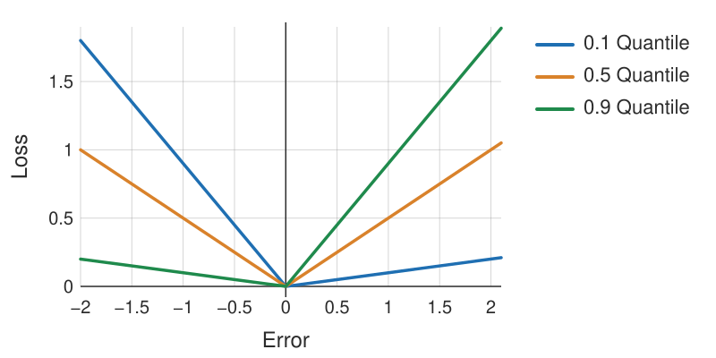
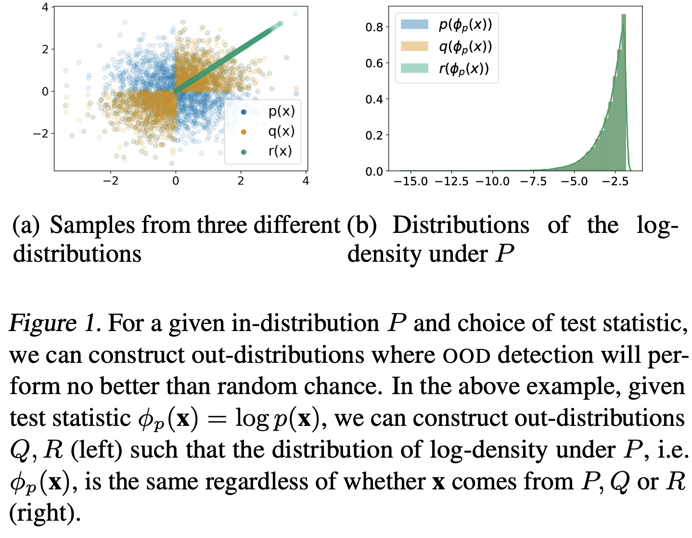
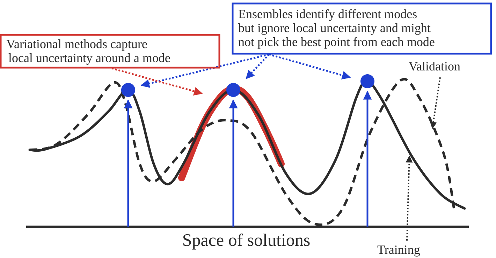

Uncertainty#
Some notes on uncertainty in machine learning, particularly deep learning.
About this chapter
Two questions run through this chapter: is a test point unlike the training data, and how much should a given prediction be trusted. The basics come first (calibration, quantile regression, ensembles). Outlier detection answers the first question using only the inputs \(X\). Uncertainty detection answers the second and also uses the labels \(Y\); it includes letting a model reject inputs and the split between epistemic uncertainty (in the parameters) and aleatoric uncertainty (noise in the data).
The neural network section groups the deep learning methods: ensembles of randomly initialized nets, networks trained to output their own confidence, nearest-neighbor scores in embedding space, and Bayesian neural nets, including dropout at test time. Conformal inference closes the chapter: prediction sets with guaranteed coverage in finite samples, for any model and any data distribution.
Basics#
Calibration means predicted probabilities match observed frequencies; Platt scaling and isotonic regression fix it after training. Quantile regression gets intervals directly by training with an asymmetric loss.
calibration - predicted probabilities should match real probabilities
platt scaling - given trained classifier and new calibration dataset, basically just fit a logistic regression from the classifier predictions -> labels
isotonic regression - nonparametric, requires more data than platt scaling
piecewise-constant non-decreasing function instead of logistic regression
confidence - predicted probability = confidence, max margin, entropy of predicted probabilities across classes
ensemble uncertainty - ensemble predictions yield uncertainty (e.g. variance within ensemble)
quantile regression - use quantile loss to penalize models differently + get confidence intervals
quantile loss = \(\begin{cases} \alpha \cdot \Delta & \text{if} \quad \Delta > 0\\\\(\alpha - 1) \cdot \Delta & \text{if} \quad \Delta < 0\end{cases}\)
\(\Delta =\) actual - predicted

Fig. 178 Figure 1. Quantile (pinball) losses for \(\alpha\) = 0.1, 0.5 and 0.9. Each is a V with slopes \(\alpha\) and \(1-\alpha\), so a high quantile penalizes under-prediction more than over-prediction, and minimizing it pushes the prediction up to that quantile.#
Single-Model Uncertainties for Deep Learning (tagovska & lopez-paz 2019) - use simultaneous quantile regression

Outlier-detection#
Each method scores how far a point is from the bulk of the training inputs: a fitted Gaussian envelope, nearest-neighbor density, how quickly random splits isolate it, or the support estimated by a one-class SVM.
Note: outlier detection uses information only about X to find points “far away” from the main distribution
overview from sklearn
elliptic envelope - assume data is Gaussian and fit elliptic envelop (maybe robustly) to tell when data is an outlier
local outlier factor (breunig et al. 2000) - score based on nearest neighbor density
idea: gradients should be larger if you are on the image manifold
isolation forest (liu et al. 2008) - lower average number of random splits required to isolate a sample means more outlier
one-class svm - estimates the support of a high-dimensional distribution using a kernel (2 approaches:)
separate the data from the origin (with max margin between origin and points) (scholkopf et al. 2000)
find a sphere boundary around a dataset with the volume of the sphere minimized (tax & duin 2004)
detachment index (kuenzel 2019) - based on random forest
for covariate \(j\), detachment index \(d^j(x) = \sum_i^n w (x, X_i) \vert X_i^j - x^j \vert\)
\(w(x, X_i) = \underbrace{1 / T\sum_{t=1}^{T}}_{\text{average over T trees}} \frac{\overbrace{1\{ X_i \in L_t(x) \}}^{\text{is } X_i \text{ in the same leaf?}}}{\underbrace{\vert L_t(x) \vert}_{\text{num points in leaf}}}\) is \(X_i\) relevant to the point \(x\)?
Uncertainty detection#
Unlike outlier detection, these methods also use the labels \(Y\) and ask whether a particular prediction is likely wrong. Options include letting the model reject an input and trust scores from nearest-neighbor density in an embedding space. The last paper shows that deep generative models can give unrelated inputs higher likelihood than training data, and that OOD detection is impossible without assumptions on the out-distribution.
Note: uncertainty detection uses information about X / \(\phi(X)\) and Y, to find points for which a particular prediction may be uncertain. This is similar to the predicted probability output by many popular classifiers, such as logistic regression.
rejection learning - allow models to reject (not make a prediction) when they are not confidently accurate (chow 1957, cortes et al. 2016)
To Trust Or Not To Trust A Classifier (jiang, kim et al 2018) - find a trusted region of points based on nearest neighbor density (in some embedding space)
trust score uses density over some set of nearest neighbors
do clustering for each class - trust score = distance to once class’s cluster vs the other classes
Understanding Failures in Out-of-Distribution Detection with Deep Generative Models (zhang…ranganath, 2021) - explicit likelihood DGMs (e.g. autoregressive models, normalizing flows) have been shown to assign higher likelihoods to unrelated inputs than even those from the training distribution
OOD detection has been defined as the task of identify- ing “whether a test example is from a different distr. from the training data” (hendrycks & gimpel, 2017)
without any constraints on out-distributions, the task of OOD detection is impossible

Fig. 179 Figure 2. Why OOD detection is impossible without assumptions on the out-distribution: for in-distribution \(P\) and the test statistic \(\log p(x)\), out-distributions \(Q\) and \(R\) (left) can be built so that the statistic has the same distribution under all three (right).#
Bayesian approaches#
Aleatoric uncertainty is noise in the data that no model can remove, and predicting a distribution for \(y\) captures it. Epistemic uncertainty is about the parameters \(\theta\) and needs a posterior over them; getting it wrong also distorts the aleatoric estimate.
epistemic uncertainty - uncertainty in the DNN model parameters
without good estimates of this, often get aleatoric uncertainty wrong (since \(p(y\vert x) = \int p(y \vert x, \theta) p(\theta \vert data) d\theta\)
aleatoric uncertainty - inherent and irreducible data noise (e.g. features contradict each other)
this can usually be gotten by predicting a distr. \(p(y \vert x)\) instead of a point estimate
ex. logistic reg. already does this
ex. regression - just predict mean and variance of Gaussian
Neural networks#
Ensembles#
The simplest strong baseline: train several networks from different random initializations and use their disagreement. The last paper finds that many more elaborate ensembling methods do about as well as a few randomly initialized networks.
DNN ensemble uncertainty works - predict mean and variance w/ each network then ensemble (don’t need to do bagging, random init is enough)
Deep Ensembles: A Loss Landscape Perspective (fort, hu, & lakshminarayanan, 2020)
different random initializations provide most diversity
samples along one path have varying weights but similar predictions

Fig. 180 Figure 3. Ensembles versus variational methods over the space of solutions. Ensemble members (blue arrows) land in different modes of the loss; a variational method (red band) captures the uncertainty around a single mode.#
Pitfalls of In-Domain Uncertainty Estimation and Ensembling in Deep Learning - many complex ensemble approaches are similar to just an ensemble of a few randomly initialized DNNs

Directly predict uncertainty#
Instead of deriving uncertainty from an ensemble or a posterior, the network gets an extra output for its own confidence, trained alongside the prediction. Related entries explain outliers or uncertainty estimates, and let a model stop at an early layer once it is confident.
Inhibited Softmax for Uncertainty Estimation in Neural Networks (mozejko et al. 2019) - directly predict uncertainty by adding an extra output during training
Learning Confidence for Out-of-Distribution Detection in Neural Networks (devries et al. 2018) - predict both prediction p and confidence c
during training, learn using \(p' = c \cdot p + (1 - c) \cdot y\)
Bias-Reduced Uncertainty Estimation for Deep Neural Classifiers (geifmen et al. 2019)
just predicting uncertainty is biased
estimate uncertainty of highly confident points using earlier snapshots of the trained model
Contextual Outlier Interpretation (liu et al. 2018) - describe outliers with 3 things: outlierness score, attributes that contribute to the abnormality, and contextual description of its neighborhoods
Energy-based Out-of-distribution Detection (liu et al. 2021)
Getting a CLUE: A Method for Explaining Uncertainty Estimates (antorán et al. 2020)
The Right Tool for the Job: Matching Model and Instance Complexities - at each layer, model outputs a prediction - if it’s confident enough it returns, otherwise it continues on to the next layer
Nearest-neighbor methods#
Confidence from distances in a network’s embedding space: a test point far from training points of its predicted class gets a low score.
Deep k-Nearest Neighbors: Towards Confident, Interpretable and Robust Deep Learning (papernot & mcdaniel, 2018)
distance-based confidence scores (mandelbaum et al. 2017) - use either distance in embedding space or adversarial training to get uncertainties for DNNs
deep kernel knn (card et al. 2019) - predict labels based on weighted sum of training instances, where weights are given by distance in embedding space
add an uncertainty based on conformal methods
Bayesian neural networks#
Put a distribution over the weights and average predictions over it. The exact posterior \(p(\theta \vert x)\) is intractable because of \(p(x)\), so the entries approximate it: Bayes by backprop learns a weight distribution, dropout at test time is read as an approximate Bayesian model, and SWAG fits a Gaussian over weights visited with a large constant step size.
-
want \(p(\theta\vert x) = \frac {p(x\vert \theta) p(\theta)}{p(x)}\)
\(p(x)\) is hard to compute
Bayes by backprop (blundell et al. 2015) - efficient way to train BNNs using backprop
Instead of training a single network, trains an ensemble of networks, where each network has its weights drawn from a shared, learned probability distribution. Unlike other ensemble methods, the method typically only doubles the number of parameters yet trains an infinite ensemble using unbiased Monte Carlo estimates of the gradients.
Evaluating Scalable Bayesian Deep Learning Methods for Robust Computer Vision (gustafsson et al. 2019)
-
focuses on epistemic uncertainty
could use one model to get uncertainty and other model to predict
Dropout as a Bayesian Approximation: Representing Model Uncertainty in Deep Learning
dropout at test time gives you uncertainty
SWAG (maddox et al. 2019) - start with pre-trained net then get Gaussian distr. over weights by training with large constant setp-size
Efficient and Scalable Bayesian Neural Nets with Rank-1 Factors (dusenberry, jerfel et al. 2020) - BNNs scale to SGD-level with better calibration
Conformal inference#
Conformal methods turn any model’s errors on held-out data into prediction intervals or sets whose coverage holds in finite samples, without assuming a parametric form for the data.
conformal inference constructs valid (wrt coverage error) prediction bands for individual forecasts
relies on few parametric assumptions
holds in finite samples for any distribution of (X, Y) and any algorithm \(\hat f\)
starts with vovk et al. ‘90
simple example: construct a 95% interval for a new sample (not mean) by just looking at percentiles of the empirical data
empirical data tends to undercover (since empirical residuals tend to underestimate variance) - conformal inference aims to rectify this
Uncertainty Sets for Image Classifiers using Conformal Prediction (angelopoulos, bates, malik, jordan, 2021)
Image-to-Image Regression with Distribution-Free Uncertainty Quantification and Applications in Imaging (Angelopoulos, …jordan, malik, upadhyayula, roman, ‘22)
pixel-level uncertainties
Key ideas
Calibration asks that predicted probabilities match observed frequencies, and Platt scaling or isotonic regression fix it after training.
Outlier detection uses only the inputs \(X\); uncertainty detection also uses the labels and asks whether a given prediction can be trusted.
Epistemic uncertainty lives in the parameters and aleatoric uncertainty in the data, and getting the first wrong also distorts the second.
For deep nets, an ensemble of a few randomly initialized networks is a strong baseline that many more elaborate methods only match.
Conformal inference gives prediction sets with coverage guaranteed in finite samples for any model and any distribution.